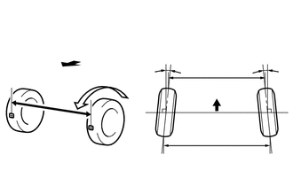

RM3140CG
_53
悬架
_023986
定位/操纵诊断
_0117169
后轮定位
G
定位/操纵诊断 后轮定位 检查
程序

 3.检查外倾角
3.检查外倾角
- 备注：
-
车辆空载时进行检查。
a.

2.052,1.26 2.375,1.26
false
2.406,1.167 2.656,1.385
0.25,0.219
10
*a
| *a | 前轮定位测定仪 |
安装前轮定位测定仪。
b.
检查外倾角。
- 外倾角（空载车辆）:
外倾角 左右差值 -1°25' +/- 0°30' (-1.42° +/- 0.50°) 0°30' (0.50°)或更小
- 提示：
-
不能调节外倾角。如果测量值不在规定范围内，则检查悬架零件是否损坏和/或磨损，并在必要时将其更换。
4.检查前束
- 备注：
-
车辆空载时进行检查。
a.
上下弹动车辆各角几次，以稳定悬架。
b.
解除驻车制动并将换档杆移至 N (CVT)。
c.
解除驻车制动并将换档杆移至空档（手动传动桥）。
d.
向正前方推车约 5 m (16.4 ft)。（步骤 A）
e.

0.83,0.579 0.83,1.114
false
1.361,0.579 1.361,0.992
1.361,0.992 0.83,0.992
false
0.739,1.134 0.912,1.302
0.173,0.168
10
*a
2.432,1.697 2.607,1.858
0.176,0.161
10
*b
2.522,1.33 2.522,1.671
false
| *a | 胎面中心标记 |
| *b | 尺寸 B |

|
车辆前部 |
在后轮最靠后的部位做好胎面中心标记，并测量标记间的距离（尺寸 B）。
f.
缓慢地向正前方推动车辆使后轮旋转 180°。以后轮气门为参考点。
- 提示：
-
不要让车轮旋转超过 180°。如果车轮旋转超过 180°，则再从步骤 A 开始执行本程序。
g.

0.646,1.271 0.646,1.635
false
1.917,0.542 2.052,0.698
0.135,0.156
10
C
3.073,0.552 3.208,0.708
0.135,0.156
10
D
2.5,0.719 2.635,0.875
0.135,0.156
10
A
2.51,1.542 2.646,1.698
0.135,0.156
10
B
0.563,1.656 0.74,1.813
0.177,0.156
10
*a
| *a | 尺寸 A |
|
|
车辆前部 |
测量后车轮前侧胎面中心标记间的距离（尺寸 A）。
- 前束（空载车辆）:
规定状态 左右差值 C + D: 0°09' +/- 0°17' (0.15° +/- 0.28°) 0°45' (0.75°) 或更小 B - A: 1.6 +/- 3.0 mm (0.0630 +/- 0.118 in.) -
- 提示：
-
仅当无法测量“C + D”时测量“B - A”。
如果前束不在规定范围内，则检查悬架零件，并在必要时将其更换。